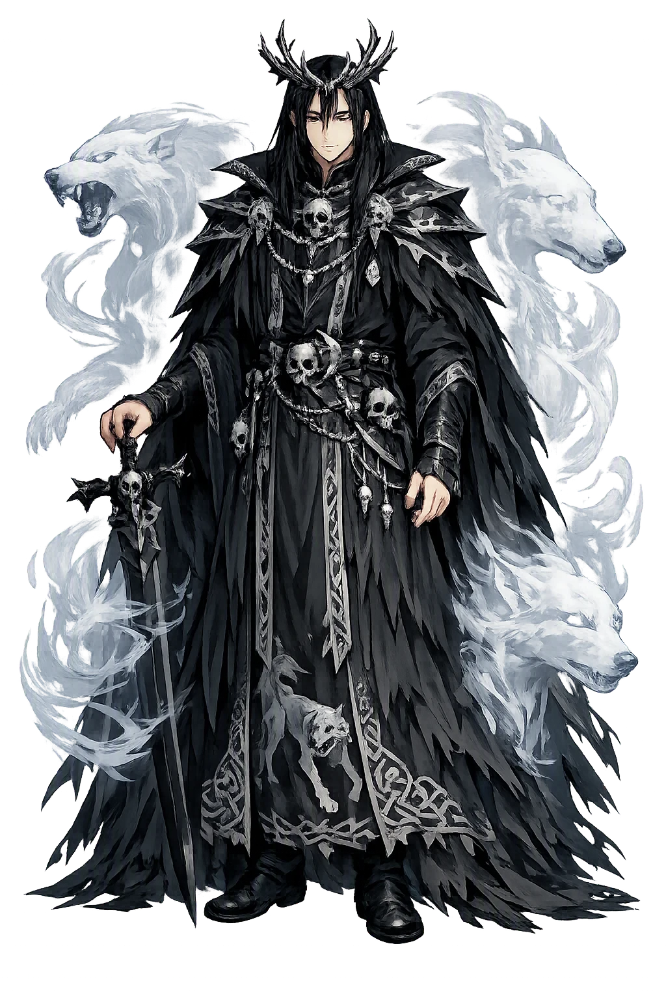
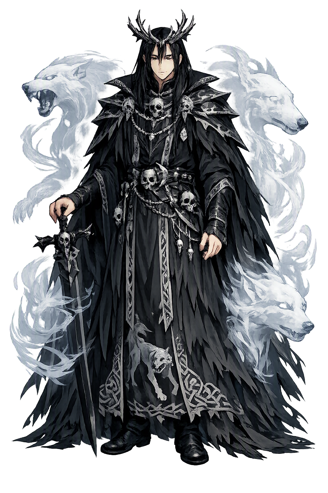

Unicode restoration and ASCII comparison
Arawn
The name survives in scholarly transliteration. Arawn is the standard Celtic romanisation, documented in academic sources — “Silver-tongued”. Because the spelling uses only Latin letters, the form is the same in both ASCII and Unicode.
No indigenous writing system is securely attested for individual celtic names. The form shown is a modern scholarly transliteration.
arawn
The plain arawn form is identical to the Unicode restoration. Because this name is already written in Latin letters, no diacritics, stress, or script information were lost — only capitalization differs.
Arawn
The Unicode restoration does not need to recover lost marks for Arawn. Its value is canonical spelling and consistent cataloguing, not the reconstruction of erased orthography. The domain is readable as-is to both DNS and humanity.
Arawn.com → arawn.com
The non-ASCII characters in Arawn are encoded while the ASCII remains visible. To the DNS, it is Punycode. To humanity, it is Arawn.
How Arawn is preserved in writing
No indigenous writing system is securely attested for individual celtic names. The form shown is a modern scholarly transliteration.
Contribute scholarly provenance →Owned, ideal, and ASCII forms of Arawn
Arawn
The full Unicode restoration. arawn.com is not in the PuniCodex collection — it is watched for release; if it drops, this temple upgrades to an owned flagship.
How Arawn was spoken
Otherworld, Annwn
Arawn is the king of Annwn, the Welsh Otherworld: the lord whose white, red-eared hounds bring down a stag in Pwyll's hunting-ground at Glyn Cuch, and whose answer to the insult is the strangest exchange in the Mabinogi — a year and a day in which two kings trade faces, thrones, and beds, so that honor may be tested where no one is watching.
Arawn's pack, shining white with red ears — the colour of the Otherworld, a sight Pwyll had never seen on any hound of his own.
A year and a day in which Arawn takes Pwyll's form in Dyfed and Pwyll takes Arawn's in Annwn — and neither court suspects.
The appointed meeting-place where Pwyll must face Hafgan, king of the other realm of Annwn — with one blow and no more.
Arawn's queen, the fairest woman Pwyll had ever seen — with whom he shares a bed for a year and never turns his face to her.
Stories of Arawn
Arawn's whole dossier is one story, and it is the opening movement of the Mabinogi: the hunting-debt at Glyn Cuch and the year-long exchange that turns an insult into the strongest friendship in Welsh prose. Every word of it is preserved in the First Branch, Pwyll Pendefig Dyfed.
Pwyll, lord of Dyfed, goes hunting at Glyn Cuch, and there he sees a sight he has never seen: a pack of hounds shining white with red ears bringing down a stag. He drives them off and sets his own hounds on the kill — and the stranger who rides up is Arawn, king of Annwn, and it was his hunt. Arawn names the discourtesy plainly: he will not take revenge, but a man who feeds his hounds on another's kill has wronged him, and Pwyll offers to buy back his friendship at whatever price. Arawn names it. He has a rival, Hafgan, king of the other realm of Annwn, who wars on him without end; let Pwyll take Arawn's shape and his place for a year and a day, and meet Hafgan at the ford at the year's turning.
Each king takes the other's form and goes to the other's court, and neither realm suspects. Arawn rules Dyfed so well that there had never been so good a year in it. Pwyll enters Annwn in Arawn's likeness, and that first night he is led to the bed of Arawn's wife — the fairest and most comely woman he had ever seen. He turns his back to her, and he does so every night of the year: he speaks to her with courtesy by day, and in the bed he never once turns his face toward her. The queen never knows. The whole test of the tale is here, in the dark, where no one could have seen the difference.
Arawn's instructions were exact: Hafgan — the name suggests 'Summer-White' — can be slain by one blow, and only one; strike him a second time and he will rise as strong as before and fight again the next day. At the appointed time the two kings meet at the ford, and at the first clash Pwyll strikes Hafgan one blow that shears through his shield and armour, and Hafgan knows he is dead. 'For God's sake,' he begs, 'finish me' — and Pwyll refuses: the stroke he gave is all Hafgan will have from him. Hafgan's nobles declare their king lost, and Pwyll takes the submission and hostages of Hafgan's realm, so that the two kingdoms of Annwn are made one under Arawn's crown.
The two kings meet again at the ford where they had arranged it, each in his own shape, and embrace and go home. Arawn's queen, rejoicing at his return, remarks that he has not spoken to her as he does tonight for a whole year — and Arawn praises God for a friend so true. In Dyfed, Pwyll's court hears the story and tells him he did well to make such a friend. From that time the two realms send each other gifts every year: horses and greyhounds and hawks, and every kind of treasure they think will please. And because Pwyll had ruled Annwn and joined its two kingdoms in one, he was called from then on Pwyll Pen Annwn — Pwyll Head of Annwn — in place of Pwyll lord of Dyfed.
The Mabinogi never brings Arawn back on stage, but his world keeps growing. The poem Preiddeu Annwfn, 'The Spoils of Annwn', preserved in the Book of Taliesin, sends Arthur's men to raid the Otherworld for the cauldron of the Head of Annwfn — Pen Annwfn, the very title the First Branch gives Pwyll's honour — and only seven come home. The poem never names Annwn's king, and honest scholarship leaves it unnamed. Later Welsh folklore knows the Cŵn Annwn, the Hounds of Annwn — white with red ears, exactly Arawn's pack — whose baying across the night sky was heard as a death-omen, and folk tradition gave their mastery to Gwyn ap Nudd rather than to Arawn. The hounds outgrew their first master; the year of the exchange did not.
Arawn sets the one test that cannot be cheated: he gives a stranger his face, his throne, and his bed, and waits a year to learn what the stranger is. Everything Pwyll does in Annwn is invisible — no one in either kingdom can tell the kings apart, and no one will ever know what passed in the bed unless the doer confesses it. That is exactly the point. Honor, the First Branch argues, is what a man does when the only witness is himself. The tale rewards it without sentimentality: the kept faith becomes an unbroken friendship, an otherworld alliance, the title Pen Annwfn, and a court that tells its lord he chose his friend well. Arawn's kingdom is the far side of the world, but his question is asked everywhere: who are you when no one is watching?
Enter Extended Lore